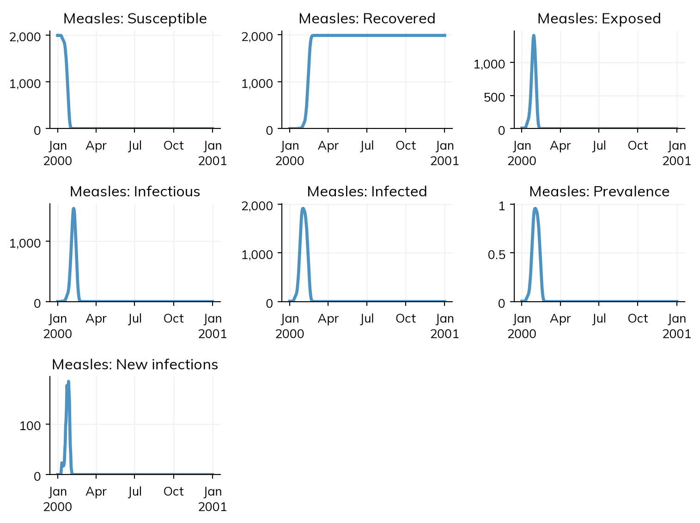
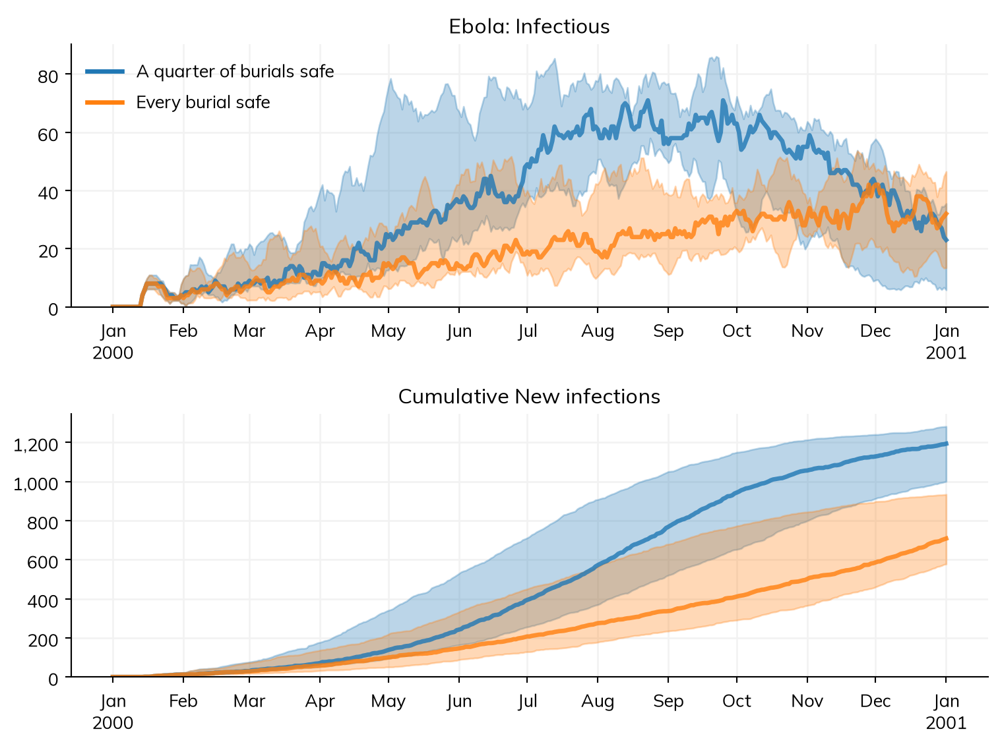
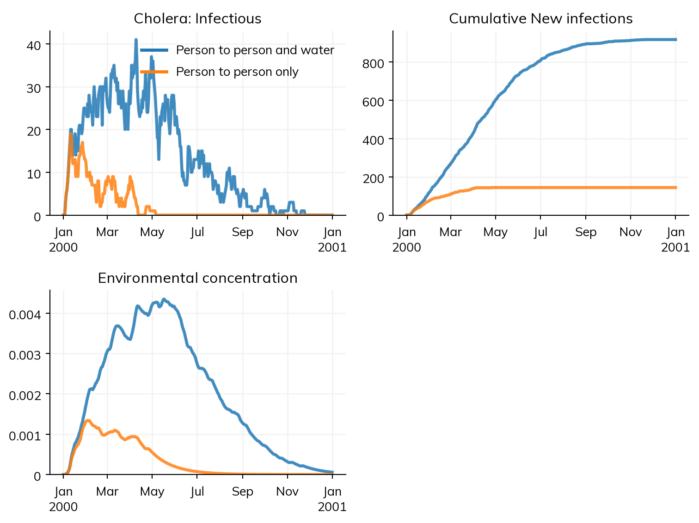
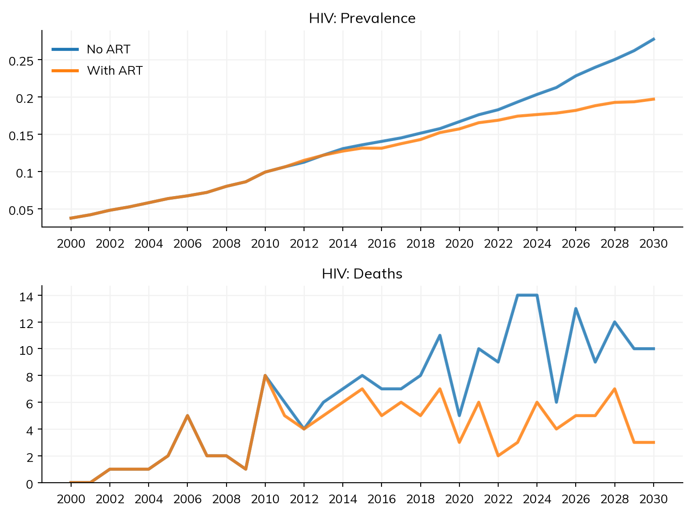
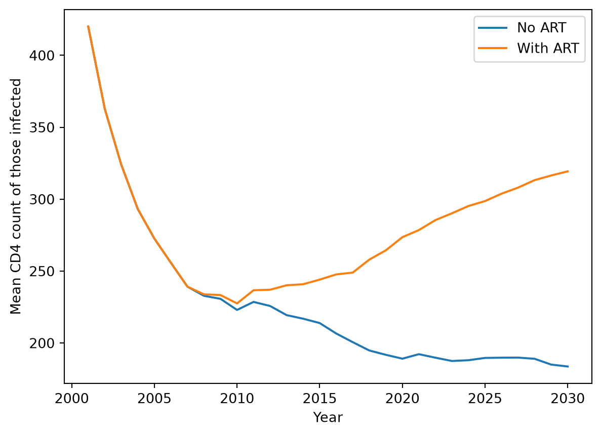
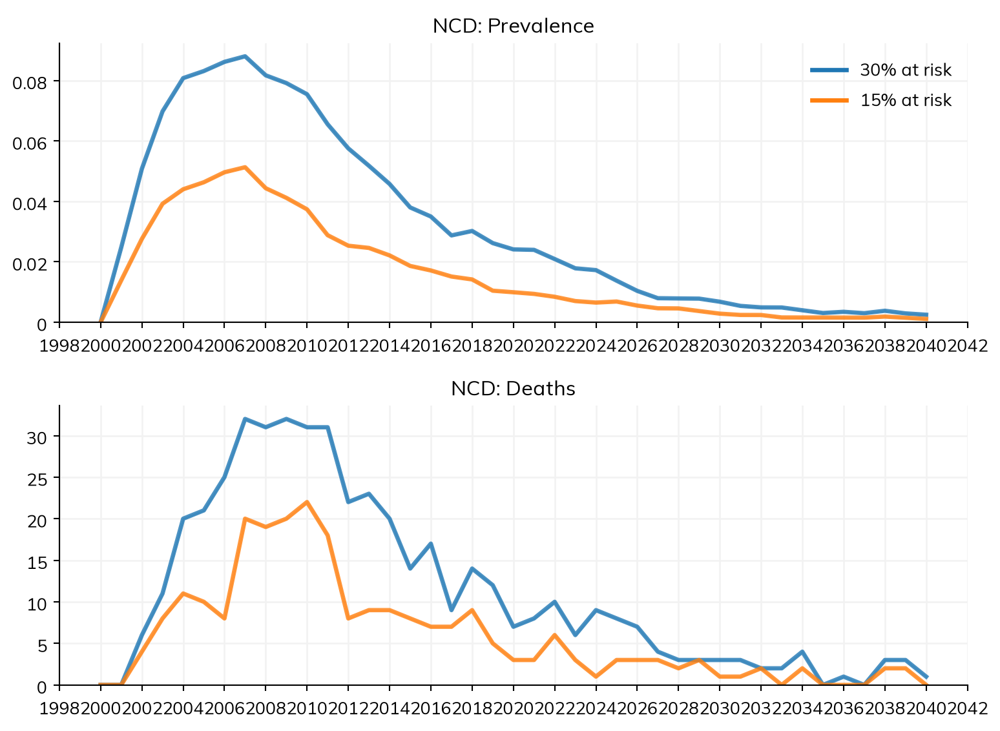
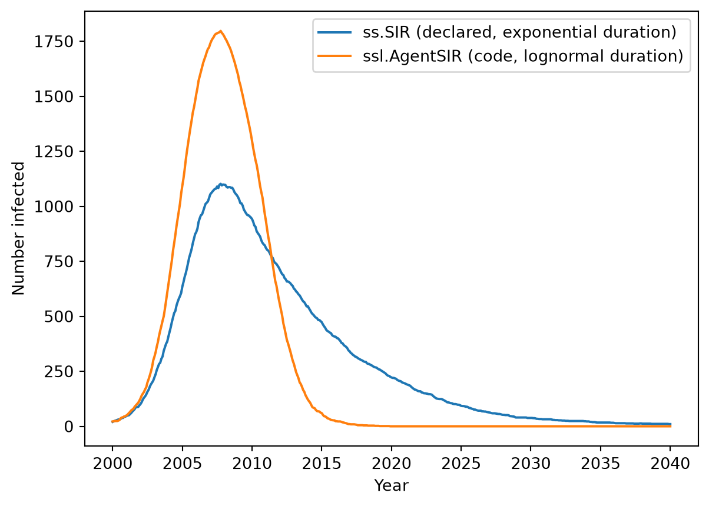
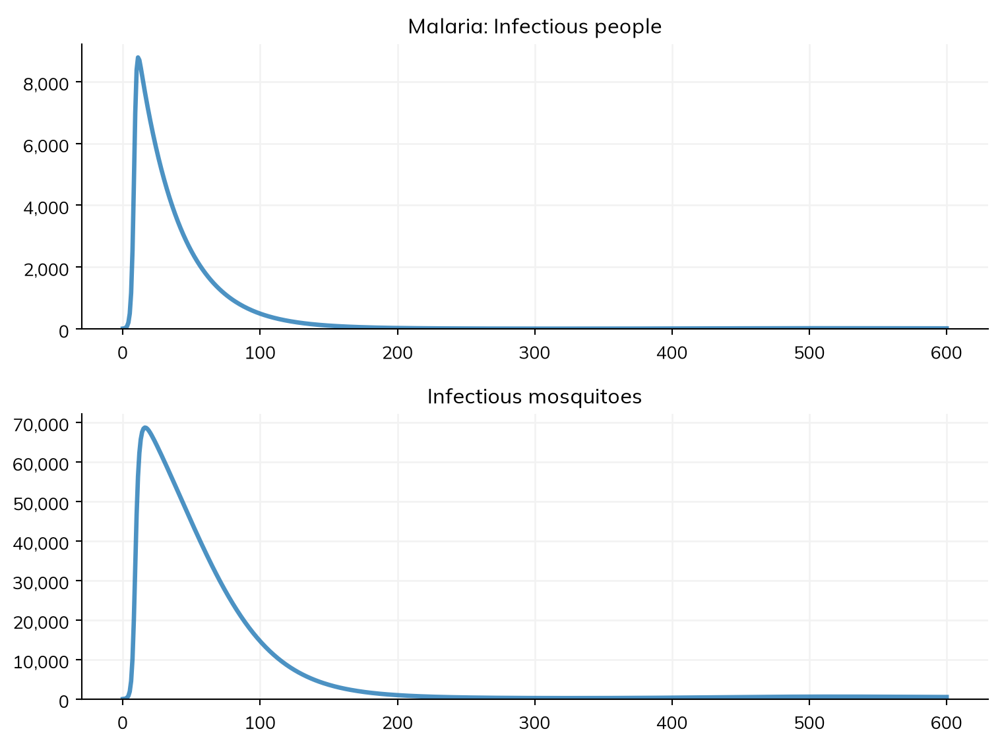
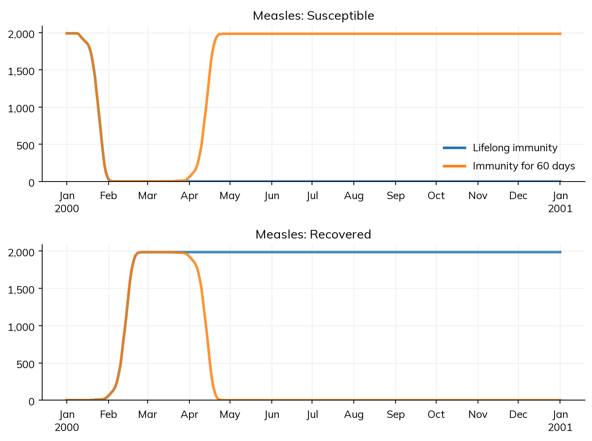

import starsim as ss
import starsim.library as ssl
print(ssl.Measles is ssl.diseases.Measles)TrueCore Starsim (import starsim as ss) provides the framework and its generic building blocks: ss.Disease, ss.SIR, ss.RandomNet, ss.Pregnancy, and so on. The Starsim library (import starsim.library as ssl) is a separate collection of specific modules built on those: particular diseases such as measles and cholera (this page), specialized networks such as households (Library: networks), and worked examples of harder modeling patterns such as congenital infection (Library: maternal-child health).
The library ships with Starsim, but is held to a lower bar than the core package. Its modules are illustrative rather than validated: parameter values are indicative, some are placeholders, and their interfaces may change between versions. Treat them as starting points to copy and adapt, not as ready-made models of a particular setting.
Most library modules are written as code (see Custom modules): each has a step() that updates its agents directly, so they run as agents, under the agent-based solver only. The measles of the tutorials, by contrast, is declared as states and transitions, which run under any solver (see Diseases). The library’s ssl.Measles is a fuller agent-based model, with deaths and its own parameters.
Library classes are available both at the top level and through their submodule; the two are the same objects:
Otherwise they behave like core modules, and can be mixed freely with them, here a library disease on a core network:
Sim: measles, as 2,000 agents, 2000-01-01 to 2001-01-01 Done in 0.31 s
The library’s outbreak diseases give their natural history in days: incubation periods of a week or two, and illness lasting days. Starsim chooses a step of a day for them, from the units of their durations. With a step of a year (dt=ss.years(1)), those durations are shorter than a step, and the dynamics are meaningless: ssl.Cholera, for example, then gives no infections at all, because its environmental reservoir never has time to build up. See Time for more on steps.
The library has two groups of diseases. The first, below, are written as code, so they run as agents: five example diseases, from a simple outbreak to a chronic infection and a disease that is not transmitted, plus an SIR, SIS, and SEIR written as code. The second, further down, are declared as states and transitions, each a short version of a published model, so they run as compartments or as agents.
| Class | Based on | Description |
|---|---|---|
ssl.Measles |
ssl.AgentSEIR |
Measles as an SEIR model, with natural history parameters from the US CDC |
ssl.Ebola |
ssl.AgentSEIR |
Ebola, with severe disease and continued transmission from unburied bodies |
ssl.Cholera |
ssl.AgentSEIR |
Cholera, with symptomatic and asymptomatic infection, plus indirect transmission through a decaying environmental reservoir |
ssl.HIV |
ss.Infection |
HIV, with CD4 counts, deaths that depend on them, and transmission from mother to child |
ssl.ART |
ss.Intervention |
Antiretroviral therapy for ssl.HIV, scaled up over the years given |
ssl.CD4_analyzer |
ss.Analyzer |
Records every agent’s CD4 count at every step, for ssl.HIV |
ssl.NCD |
ss.Disease |
A non-communicable disease: a risk factor, the condition, and death from it; not transmitted |
ssl.AgentSIR, ssl.AgentSIS, ssl.AgentSEIR |
ss.Infection |
Starsim 3’s SIR, SIS (with waning immunity), and SEIR, written as code: the classes to build on for a disease that changes how infection, progression, or recovery happens for each agent |
The three diseases with a latent period build on ssl.AgentSEIR, which moves agents from S to E to I to R. Measles only sets parameter values: a latent period of about 8 days, an infectious period of about 11, and a probability of death of 0.5%. Ebola and Cholera also replace set_progression(), for their fuller natural histories (severe disease and burial; symptoms and shedding), while keeping the transitions between states and the counting of new infections. All three have placeholder values of beta, so give one suited to the network.
Ebola gives each case a chance of severe disease (p_sev) and of death (p_death); severe cases transmit more (sev_factor), and so do the bodies of those who have died until they are buried (unburied_factor), unless they are buried safely, which happens with probability p_safe_bury. Comparing the default, a quarter of burials safe, with every burial safe shows how much the funerals add to an epidemic. Since this epidemic is close to its threshold, chance matters, so each scenario is run 5 times, and the plot shows the median and the range:
ebola = lambda p_safe_bury: ssl.Ebola(beta=ss.perday(0.008), p_safe_bury=p_safe_bury)
scenarios = {
'A quarter of burials safe': ss.Sim(diseases=ebola(0.25), networks=ss.RandomNet(), **outbreak),
'Every burial safe': ss.Sim(diseases=ebola(1.0), networks=ss.RandomNet(), **outbreak),
}
msim = ss.parallel(scenarios, n_runs=5, parallel=False)
msim.plot(['ebola.infectious', 'ebola.infection.cum'])MultiSim: 10 runs of 2 scenarios (A quarter of burials safe, Every burial safe)
Done in 4.8 s
In these runs, burying every body safely cuts the infections over the year by about a quarter.
Cholera adds environmental transmission to the usual transmission from person to person, by extending infect(): infectious people shed bacteria into a shared reservoir (at shedding_rate, asymptomatic people much less), the bacteria die off (at decay_rate), and susceptible people are infected by the water with a probability that rises with the concentration, reaching half of beta_env at half_sat_rate. This is the pattern to follow for any waterborne, vector-borne, or otherwise indirectly transmitted disease. Turning off the environmental route (beta_env=0) shows how much of the epidemic it carries:
cholera = lambda **kwargs: ssl.Cholera(beta=ss.perday(0.02), **kwargs)
scenarios = {
'Person to person and water': ss.Sim(diseases=cholera(), networks=ss.RandomNet(), **outbreak),
'Person to person only': ss.Sim(diseases=cholera(beta_env=0), networks=ss.RandomNet(), **outbreak),
}
msim = ss.parallel(scenarios, parallel=False)
msim.plot(['cholera.infectious', 'cholera.infection.cum', 'cholera.env_conc'])MultiSim: 2 runs of 2 scenarios (Person to person and water, Person to person only)
Done in 0.81 s
With these values, transmission from person to person alone barely sustains itself, and the reservoir turns a small outbreak into a large one. The results env_prev (the share of people shedding) and env_conc (the concentration of bacteria) track the reservoir.
ssl.HIV comes with two companion modules that show how a disease, an intervention, and an analyzer fit together:
ssl.ART is an intervention that scales up treatment coverage over the years given, reducing transmission by art_efficacy and raising CD4 counts back towards cd4_max.ssl.CD4_analyzer is an analyzer that records every agent’s CD4 count at every step, in a dense array of steps by agents (so it suits small sims).Since deaths from HIV depend on CD4 counts, treatment reduces deaths as well as transmission. Unlike the outbreak diseases above, HIV plays out over years, so steps of a year and a span of decades suit it:
endemic = dict(start='2000', stop='2030', dt=ss.years(1), n_agents=2000)
hiv = lambda: ssl.HIV(beta=ss.peryear(0.05), init_prev=0.05)
net = lambda: ss.RandomNet(n_contacts=ss.poisson(2))
art = ssl.ART(year=[2005, 2015], coverage=[0, 0.9]) # Coverage rising from 0 in 2005 to 90% in 2015
scenarios = {
'No ART': ss.Sim(diseases=hiv(), networks=net(), analyzers=ssl.CD4_analyzer(), **endemic),
'With ART': ss.Sim(diseases=hiv(), networks=net(), analyzers=ssl.CD4_analyzer(), interventions=art, **endemic),
}
msim = ss.parallel(scenarios, parallel=False)
msim.plot(['hiv.prevalence', 'hiv.death'])MultiSim: 2 runs of 2 scenarios (No ART, With ART)
Done in 0.59 s
The deaths over the whole run, and the prevalence in 2030 (the final value), for each scenario:
| value | ||
|---|---|---|
| result | scenario | |
| hiv_death | No ART | 199.000000 |
| With ART | 120.000000 | |
| hiv_prevalence | No ART | 0.138603 |
| With ART | 0.123943 |
Each sim’s analyzer holds the CD4 counts of every agent. The mean count among those infected falls without treatment, and recovers as treatment is scaled up:
import numpy as np
import matplotlib.pyplot as plt
fig = plt.figure()
for label, sim in zip(scenarios, msim.sims):
cd4 = sim.analyzers.cd4_analyzer.cd4 # Steps by agents
infected = cd4 < sim.diseases.hiv.pars.cd4_max # Uninfected agents keep the maximum count
mean_cd4 = np.array([row[inf].mean() if inf.any() else np.nan for row, inf in zip(cd4, infected)])
plt.plot(sim.t.yearvec, mean_cd4, label=label)
plt.xlabel('Year')
plt.ylabel('Mean CD4 count of those infected')
plt.legend()
plt.show()
ART offers treatment only to agents infected at least art_delay ago, so it has no effect once an epidemic has saturated and no one is newly infected. If the number on treatment (n_art) stays at zero, check that transmission is still going on when treatment starts.
ssl.NCD is not transmitted, so it needs no network. Each agent starts at risk with probability initial_risk; those at risk develop the condition after a time drawn from dur_risk, and die of it after a time drawn from prognosis. Its results are the number at risk, the prevalence of the condition, and the deaths from it. Halving the share who start at risk, as a stand-in for a policy on a risk factor such as smoking, halves the cases and deaths that follow:
chronic = dict(start='2000', stop='2040', dt=ss.years(1), n_agents=2000, demographics=[ss.Births(), ss.Deaths()])
scenarios = {
'30% at risk': ss.Sim(diseases=ssl.NCD(initial_risk=0.3), **chronic),
'15% at risk': ss.Sim(diseases=ssl.NCD(initial_risk=0.15), **chronic),
}
msim = ss.parallel(scenarios, parallel=False)
msim.plot(['ncd.prevalence', 'ncd.death'])MultiSim: 2 runs of 2 scenarios (30% at risk, 15% at risk)
Done in 0.094 s
Only the starting population is ever at risk here, so the condition dies out with them; a model of a real risk factor would put newborns and others at risk too, which is a change of init_post() and step() (see Adapting a library module).
The core ss.SIR, ss.SIS, and ss.SEIR are declared, as states and transitions, so they run under any solver; they are the textbook models, with exponential durations and no deaths unless p_death is given. ssl.AgentSIR, ssl.AgentSIS, and ssl.AgentSEIR are Starsim 3’s versions of the same models, written as code: durations are lognormal (dur_inf=ss.lognorm_ex(mean=ss.years(6)) by default), and AgentSIR and AgentSEIR have p_death=0.01. They schedule each course in whole steps as the agent engine does a declared disease’s, so each case, seeds included, is infectious for dur_inf on average (in Starsim 3, each case was half a step short, and the seeds half a step long). AgentSIS also has a level of immunity for each agent, boosted by each infection (imm_boost) and waning exponentially (waning), which lowers that agent’s susceptibility. They are the classes to build on for a disease that changes how infection, progression, or recovery happens for each agent, as the outbreak diseases above do; a Starsim 3 subclass of ss.SIR that replaces its methods can build on ssl.AgentSIR instead, unchanged (see Starsim v3).
With the same mean duration and no deaths, the two SIRs differ only in the shape of the duration: the lognormal of AgentSIR (with a standard deviation of one year) makes almost every infection last about 6 years, while the exponential of ss.SIR has many short infections and a few very long ones. Fewer people recover early on, so the epidemic of AgentSIR peaks higher and ends more sharply:
pars = dict(beta=ss.peryear(0.1), init_prev=0.01, p_death=0)
sir_pars = dict(start='2000', stop='2040', dt=ss.months(1), n_agents=2000, networks=ss.RandomNet())
declared = ss.Sim(diseases=ss.SIR(**pars), **sir_pars).run()
as_code = ss.Sim(diseases=ssl.AgentSIR(**pars), **sir_pars).run()
fig = plt.figure()
plt.plot(declared.t.yearvec, declared.results.sir.I, label='ss.SIR (declared, exponential duration)')
plt.plot(as_code.t.yearvec, as_code.results.agentsir.infected, label='ssl.AgentSIR (code, lognormal duration)')
plt.xlabel('Year')
plt.ylabel('Number infected')
plt.legend()
plt.show()Sim: sir, as 2,000 agents, 2000-01-01 to 2040-01-01
Running as agents: n_agents was given Done in 0.39 s; sir: 1,975 infections; at most 1,102 infectious, on 2007-10-01Sim: agentsir, as 2,000 agents, 2000-01-01 to 2040-01-01 Done in 0.3 s
Their results are named differently: the declared model’s are named after its states (I) and transitions (infection), while the version written as code has Starsim 3’s names for its states (infected), and the same infection.
The rest of the library’s diseases are declared, as states and transitions (Diseases), so each runs as a compartmental model or as agents. Each is a short version of a published model, with its default parameters from that source, named for the disease rather than for the model, so the source is given here and in each class’s docstring. They are still illustrative: each is the simplest version of its model that shows what makes it interesting, and none has been fitted to a particular place.
| Class | What it shows | The model, and where the parameters come from |
|---|---|---|
ssl.Malaria |
A vector: people and mosquitoes in one model, the mosquitoes as counts rather than people | The Ross-Macdonald model, in the form of Keeling MJ, Rohani P, Modeling Infectious Diseases in Humans and Animals, Princeton University Press, 2008, Program 4.4, which gives every parameter |
ssl.MalariaImmunity |
Immunity that builds with exposure: inoculation that saturates, superinfection, and a faster recovery once immune | The Garki model of Dietz K, Molineaux L, Thomas A, Bull World Health Organ 1974;50:347-357, as given in Molineaux L, Gramiccia G, The Garki Project, WHO, 1980, ch. 10, Table 31 |
ssl.TB |
A spectrum of disease, with movement back and forth between states and reinfection | The LSHTM model of Schwalb A et al., PLOS Glob Public Health 2025;5(1):e0005050, in the form of TBsim’s reference ODE (lshtm_ode.R), which gives every parameter |
ssl.COVID |
A chain of increasingly severe states, each of which some people leave by recovering | The simple SECIR example of MEmilio (Kühn MJ et al., Mathematical Biosciences 2021), which gives every parameter |
ssl.Influenza |
A yearly cycle in transmission (ss.seasonal) with waning immunity |
Natural history from Carrat F et al., Am J Epidemiol 2008;167:775-785; R0 of 1.3 from Biggerstaff M et al., BMC Infect Dis 2014;14:480; the cycle is illustrative |
ssl.RSV |
Maternal immunity: babies born protected, in a seasonal MSEIRS model | Weber A, Weber M, Milligan P, Math Biosci 2001;172:95-113, for the infectious period, the seasonal form, and R0 |
ssl.Pertussis |
Immunity that wanes over decades, giving epidemics that return every few years | Wearing HJ, Rohani P, PLoS Pathogens 2009;5(10):e1000647, for the natural history, R0, and duration of immunity |
ssl.Dengue |
Several serotypes, each a disease with its own vector, and partial cross-protection between them | The Ross-Macdonald structure above, with indicative dengue values; cross-protection as found by Reich NG et al., J R Soc Interface 2013;10:20130414 |
ssl.Typhoid |
Chronic carriers: a few people shed for life, at a hundredth of the infectiousness of an acute case | Pitzer VE et al., PLoS Negl Trop Dis 2014;8(1):e2642, for the carriers, waning, and R0 of 2.8 |
ssl.Polio |
A rare outcome as a branch: about 1 infection in 200 causes paralysis | US CDC Pink Book for the paralytic fraction; Fine PEM, Carneiro IAM, Am J Epidemiol 1999;150:1001-1021, for R0 |
ssl.Syphilis |
Stages, with the one thing that cannot be declared (infectiousness that falls with time since the latent stage began) written as code | STIsim’s syphilis module, which cites its own sources |
ssl.Gonorrhea |
An SIS infection on a sexual network | STIsim’s gonorrhea module |
Malaria is the clearest example of what declaring buys: mosquitoes are states like any other, declared with people=False so that they are counts rather than people, and R0() works out the reproduction number from the model itself:
R0: 14.6
Starsim’s R0() counts each passage through a mosquito as a generation, so it is the square root of the classical Ross-Macdonald value, m·a²·b·c/(γ·μ_v) = 213.
The Garki model adds immunity, and with it the result the source is known for: malaria dies out below a critical vectorial capacity, (α₁ + δ)/g, which is 0.022 contacts per person per day with these parameters:
critical = 0.022
for C in [0.5*critical, 2*critical, 0.2]:
sim = ss.Sim(ssl.MalariaImmunity(C=C), total_pop=10_000, unit='day', dt=ss.days(5), stop=365*30, verbose=0)
sim.run()
res = sim.results.malariaimmunity
print(f'Vectorial capacity {C:.3f}: parasite rate {res.prevalence[-1]:.3f}, of which detected {res.detected[-1]:.3f}')Vectorial capacity 0.011: parasite rate 0.000, of which detected 0.000
Vectorial capacity 0.044: parasite rate 0.313, of which detected 0.311
Vectorial capacity 0.200: parasite rate 0.509, of which detected 0.491The same declaration runs as agents (n_agents= instead of total_pop=), where the prevalence is the same but each run differs by chance.
Since these are declared, describe(), diagram(), and equations() work on any of them, which is the quickest way to see what a model does (ssl.Dengue is a list of serotypes, so each is shown in its own right, e.g. sim.diseases.den1.diagram()):
dS/dt = -birth_rate * S - (beta * S * I / N + beta * rel_carrier * S * C / N) + R / dur_imm + birth_rate * (S + I + C + R).n
dI/dt = (beta * S * I / N + beta * rel_carrier * S * C / N) - birth_rate * I - I / dur_inf
dC/dt = p_carrier * I / dur_inf - birth_rate * C
dR/dt = (1 - p_carrier) * I / dur_inf - birth_rate * R - R / dur_immOne of them needs agents rather than compartments: ssl.Syphilis, because the falling infectiousness of latent syphilis is a quantity each person carries, set in its step(). The rest run under any solver.
Library modules are ordinary Starsim modules, so they can be changed in the usual ways. The simplest is to change their parameters:
For a change to how the disease works, build on the class. Here measles gets waning immunity: recovered agents become susceptible again after a delay, dur_immune. The new class adds a parameter and a state in __init__(), schedules the loss of immunity when each agent is infected (set_prognoses()), and makes the agents whose time has come susceptible again at each step (step_state()):
class WaningMeasles(ssl.Measles):
def __init__(self, dur_immune=ss.years(1), **kwargs):
super().__init__(**kwargs)
self.define_pars(dur_immune=dur_immune)
self.update_pars(**kwargs)
self.define_states(ss.TimeArr('ti_susceptible', label='Time of losing immunity'))
return
def set_prognoses(self, uids, sources=None):
super().set_prognoses(uids, sources)
self.ti_susceptible[uids] = self.ti_recovered[uids] + self.pars.dur_immune / self.t.dt
return
def step_state(self):
super().step_state()
waned = (self.recovered & self.ti_susceptible.due()).uids
self.recovered[waned] = False
self.susceptible[waned] = True
return
scenarios = {
'Lifelong immunity': ss.Sim(diseases=ssl.Measles(beta=ss.perday(0.3)), networks=ss.RandomNet(), **outbreak),
'Immunity for 60 days': ss.Sim(diseases=WaningMeasles(dur_immune=ss.days(60), beta=ss.perday(0.3), name='measles'), networks=ss.RandomNet(), **outbreak),
}
msim = ss.parallel(scenarios, parallel=False)
msim.plot(['measles.susceptible', 'measles.recovered'])MultiSim: 2 runs of 2 scenarios (Lifelong immunity, Immunity for 60 days)
Done in 0.53 s
Giving the new disease name='measles' keeps its results under the same name as the original’s, so the two can be plotted together. With waning, the recovered agents return to being susceptible, as intended. This alone doesn’t produce a second wave: the outbreak burns out before immunity wanes, so there is no one infectious left to start one. Recurring waves need a continuing source of infection: importation, births (bringing in new susceptible people), or a slower disease.
Copying a library module and editing it is also a good way to use it; that is what these modules are for. See Custom modules for writing modules from scratch, and the tutorial A5 – Custom modules for a worked example.
New library modules are welcome, particularly ones that show a modeling pattern that is otherwise hard to work out. See starsim/library/README.md for its conventions, and How to contribute for the general process.